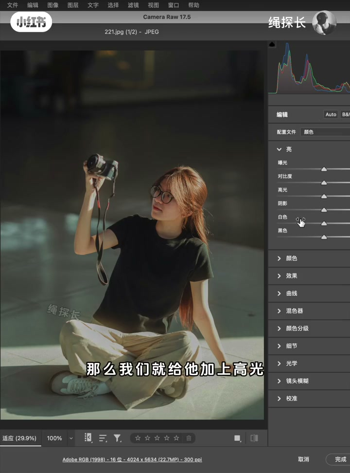
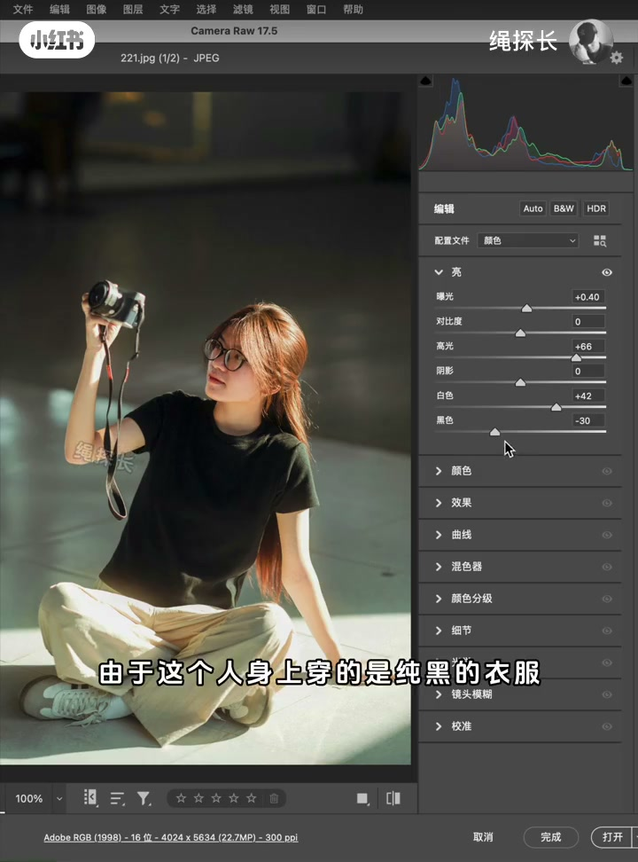
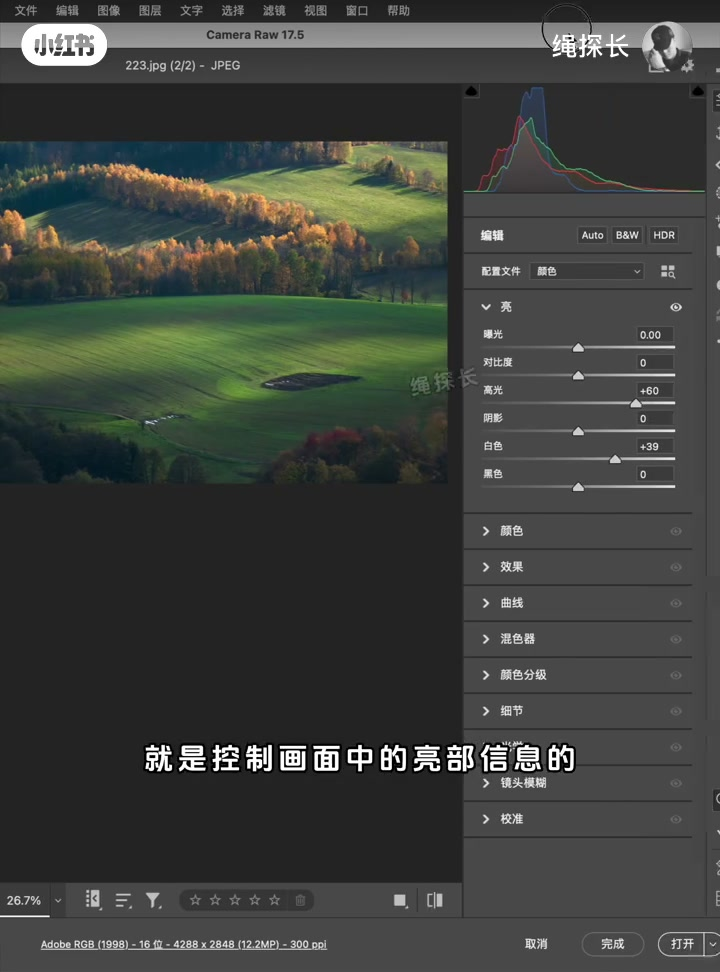
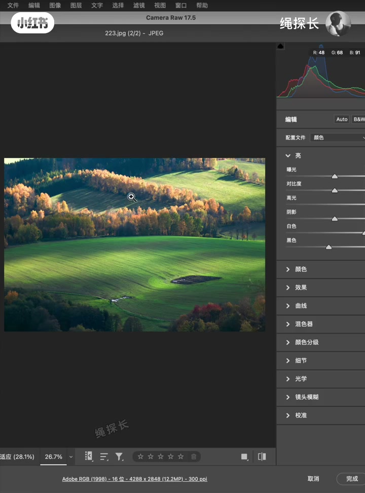
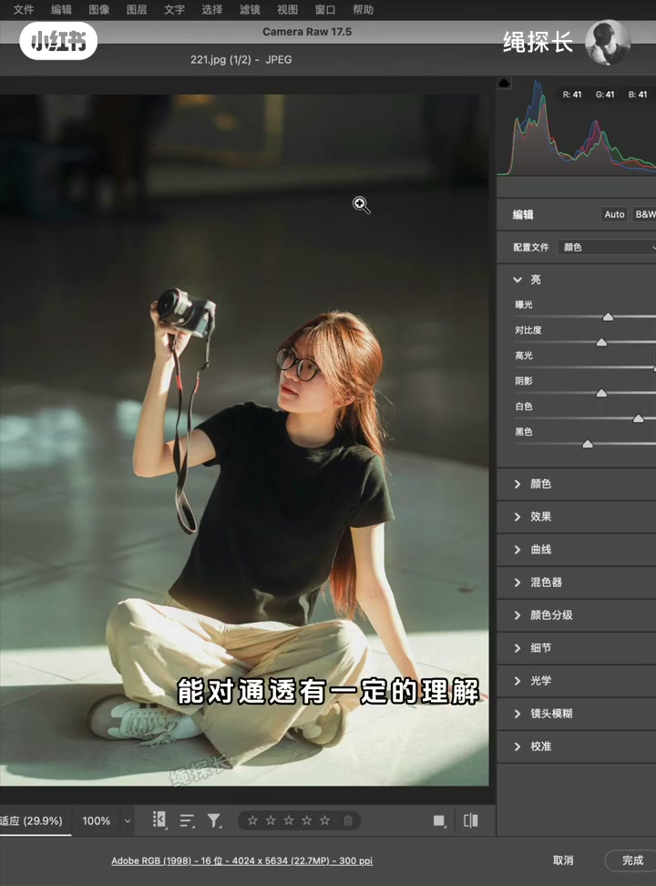

光影通透=亮暗对比
亮处不够亮、暗处不够暗，直方图高光和阴影都缺一截——论通透就灰。但两端少信息不等于题材拍错，有些题材就需要这种影调。
[00:10] 拍了几年仍说不清通透？先拆成光影通透与颜色通透
Years shooting still fuzzy on ‘clarity’? Split light contrast vs color contrast.
[00:40] 人像例：两端信息少→不通透；不等于整张拍坏
Portrait: empty histogram ends look flat—not automatically a bad shoot.
用亮部/暗部滑块补两端
缺高光就加高光和白色，缺暗部就补阴影/黑色，必要时略提曝光。风光同理：高光白色把直方图右侧填实，暗部略补黑色。

[01:15] ACR/LR 基本面板：高光+白色抬亮部，阴影/黑色补暗部
Basic panel: Highlights/Whites lift brights; Shadows/Blacks restore depth.

[01:40] 两端补齐后再看直方图——光线通透直观多了
After filling both ends, light ‘clarity’ reads immediately.

[02:20] 风光同样：高光白色补右边，暗部略补——影调拉开
Landscapes: same end-fill—open the tonal stretch.
颜色通透靠反差
即使影调通透，黑衣黑布黑发黑相机也没色彩反差；草地树叶全黄再加暖光，颜色糊成一片也不通透。结论：通透由光影对比 + 色彩反差共同决定。
[02:55] 全黑穿搭：光线再通透，颜色仍闷——缺主体/背景色差
All-black outfit: tonality may open, color still dull without separation.

[03:15] 满屏同类暖黄：直方图漂亮也难有颜色通透
All warm yellows: pretty histogram, weak color clarity.

[03:35] 收束：通透=光影两端 + 色彩反差；小白可复用的后期常识
Close: clarity = tonal ends + color contrast—beginner-ready rule.
小结
先问两端有没有信息，再问颜色有没有分开。